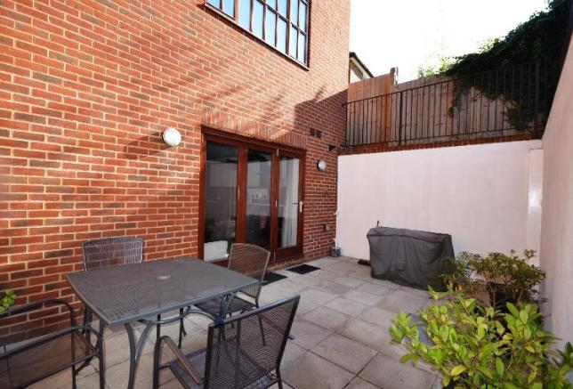
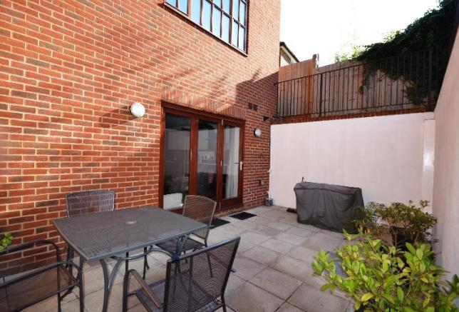
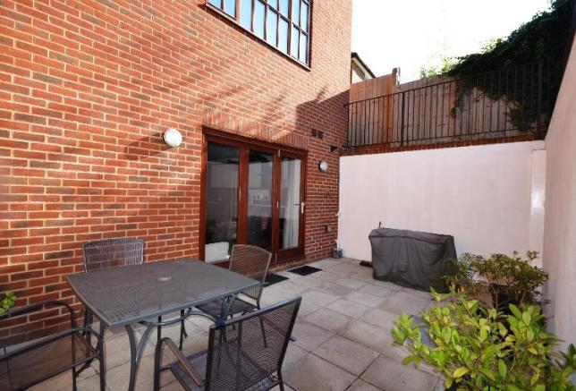

 


Mansion House, Cowley Street, Westminster, London, SW1P
 Available For The First Time in Generations: A Palatial Stately Home in The Heart of The Establishment.
Mansion House is a spectacular restoration and refurbishment by Saigol DDC of a grand early 20th century building originally designed by Horace Field.
Mansion House is immersed in prestige and the design includes the finest Italian bookmatched marbles, magnificent gilding, a four metre cupola, a ten metre swimming pool with health/spa facilities, iconic London views and craft from artisans who have worked at Windsor Castle and The Palace of Westminster.
With views of Big Ben, the House of Lords and Westminster Abbey from its roof terrace, this Grade II Listed building which is over 15m wide incorporates a wealth of striking period features such as the sweeping central staircase, the beautifully ornate gilt cupola and the dramatically spacious oak-panelled first floor drawing room with 5 windows.
The house benefits from wonderful amenities including an 8 person lift, spa/gym/Jacuzzi with c.10m swimming pool, comfort cooling, integrated audio-visual/lighting systems, stunning roof terrace, walk-in wine room, c.11m drawing room, games room, cinema room, bar, garden, double kitchen, study and 7 bedrooms/ensuites including master dressing room and 2 staff bedrooms/facilities.
Grand entrance hall, drawing room with double doors to study, 12-16 person dining room, kitchen/breakfast room, bar/media room, games room, sitting room, walk-in wine room, master bedsroom suite with dressing room and 2 bathrooms, 4 further en suite bedrooms, 2 staff bedrooms, staff bathroom, kitchenette, laundry, Italian garden, 2 terraces, roof terrace, patio, gym, spa with 10m swimming pool, jacuzzi, sauna and steam room, 8 person lift, Freehold.
Cowley Street is at the very heart of the British Establishment and is considered one of the best preserved Georgian streets in London. Mansion House is at the southern end with charming views along Lord North Street to St John's Church in Smith Square.